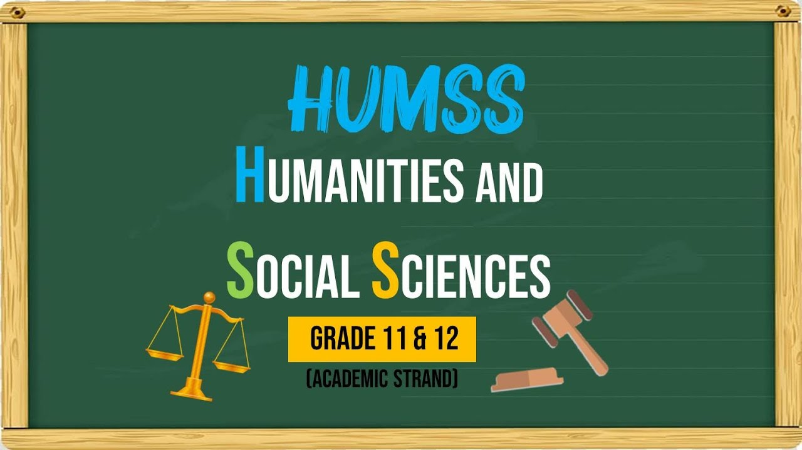
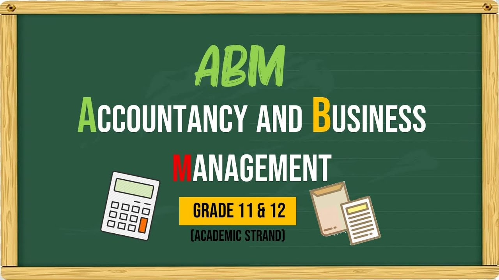

These are the strands offered in Philippine College of Advanced Arts and Technology

Humanities and Social Sciences
HUMSS designed for those who admire what is on beyond of the wall. In other words, learners are ready to explore on the world and talk to a lot of things and people. This is for those who are considering taking up journalism, communication arts, liberal arts, education, and other social science-related course.
General Academics
GA is suited for students who are still undecided on which track to take. There are elective subjects from the different academic strands under this track that can be an option. These subjects include Humanities, Social Sciences, Applied Economics, Organization and Management, and Disaster Preparedness.


Accountancy, Business, and Management
ABM center on the basic concepts of financial management, business management, corporate operations, and all things that are accounted for. Learners are guided to careers on management and accounting which could be sales manager, human resources, marketing director, project officer, book keeper, accounting clerk, internal auditor, and a lot more.
Tech-Voc ICT
Information and Communication Technology – (Programming – Java and .NET) a specialization course that leads to a Programming that discusses six (6) basic competencies, two (2) common competencies, and two (2) core competencies that a Grade 11 Technical-Vocational Education (TVE) student ought to possess. In this area, learners can lead workplace communication, lead small team, develop and practice negotiation skills, solve problems related to work activities, use mathematical concepts and techniques and use relevant technologies.
Tech-Voc Home Economics
Home Economics – Bartending and Food & Beverages is designed for students to develop their knowledge, skills and attitude required in effective bar and beverage services. It reflects the role of a bartender and/or a utility/back and may be part of the role of a bar attendant. It covers four core competencies namely: 1) cleaning bar areas 2) operating bar 3) preparing and mixing cocktails and non-alcoholic concoctions, and 4) providing basic wine services.